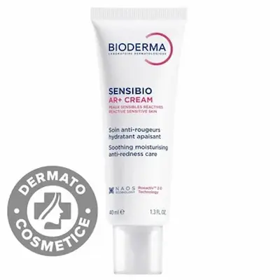
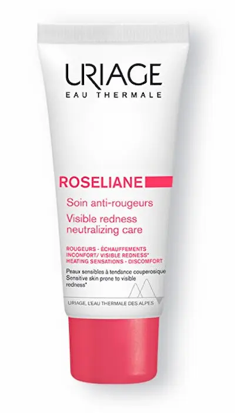

Curățarea delicată și protejarea barierei naturale sunt esențiale
pentru a calma iritațiile și a reduce roșeața vizibilă.
Curățarea delicată și protejarea barierei naturale sunt esențiale
pentru a calma iritațiile și a reduce roșeața vizibilă.
Ce sunt iritațiile și roșeața difuză?
Iritațiile și roșeața sunt semne ale unei bariere cutanate compromise sau ale unei reactivități vasculare crescute. Spre deosebire de o simplă înroșire trecătoare, roșeața persistentă (eritemul) indică faptul că pielea nu se mai poate apăra singură împotriva agresorilor externi, capilarele rămânând dilatate și vizibile la suprafață.
Este esențial de înțeles: pielea iritată nu are nevoie de „mai multă” curățare, ci de protecție. În climatul din România, cu ierni geroase și veri caniculare, bariera de protecție este constant sub asediu. Fără o îngrijire calmantă adecvată, inflamația se cronicizează, ducând la o textură aspră, senzație de „piele care strânge” și un aspect congestionat.
Cauzele sensibilității și bariera compromisă
Principalul declanșator este pierderea apei transepidermice cauzată de distrugerea stratului lipidic. Nu este afectat doar confortul, ci și sănătatea vasculară: când pielea este inflamată, microcirculația se accelerează, iar vasele de sânge devin fragile, un proces care stă la baza rozaceei și a cuperozei.
Un factor critic, des întâlnit în marile orașe precum Bucureștiul sau Iașiul, este poluarea și apa extrem de dură. Metalele grele și clorul perturbă echilibrul natural al pielii, lăsând-o vulnerabilă. Rezultatul este un ten care reacționează violent la orice: de la schimbările de temperatură, până la ingredientele active din cosmetice. O îngrijire corectă nu trebuie să fie „activă”, ci „restructurantă”.

Reguli pentru calmarea iritațiilor
Ingrediente care calmează și repară
| Ingredient | Acțiune asupra roșeții |
|---|---|
| Centella Asiatica (CICA) | Accelerează regenerarea pielii și calmează instantaneu senzația de arsură sau „piele care strânge”. |
| Niacinamidă (Vitamina B3) | Reduce inflamația vasculară și fortifică bariera de protecție pentru a preveni iritațiile viitoare. |
| Pantenol (Provitamina B5) | Acționează ca un magnet de hidratare și reduce rapid eritemul (roșeața) cauzat de factorii externi. |
| Ceramide | „Lipește” celulele stratului cornos, reparând breșele prin care pătrund agenții iritanți. |

Cele mai bune produse pentru iritații și roșeață


Ce să NU faci când ai pielea iritată?
Cum să reduci roșeața pe termen lung?
Bariera cutanată nu se repară peste noapte, ci prin constanță. Regula de aur: mai puțin înseamnă mai mult. Imediat ce reduci numărul de ingrediente active agresive și te concentrezi pe hidratare, pielea își va recăpăta capacitatea de autoapărare.
Pentru rezultate durabile, folosește produse hipoalergenice care protejează microcirculația. În combinație cu o protecție solară minerală, acestea vor preveni vasodilatația și vor menține tenul liniștit, uniformizând nuanța și eliminând aspectul de „față mereu roșie”.

Protocol Zilnic: Dimineața vs Seara
Pentru a calma roșeața și a fortifica bariera cutantă, este esențial să împarți rutina în două faze: protectoare și reparatoare.
| Momentul zilei | Etapa de îngrijire | De ce este necesar? |
|---|---|---|
| Dimineața | Curățare fără clătire + Ser CICA + SPF 50 | Protejează vasele de sânge împotriva variațiilor de temperatură și a radiațiilor UV, principalii factori care agravează roșeața. |
| Seara | Curățare blândă + Cremă cu Ceramide | Reface „mortarul” lipidic al pielii în timpul nopții, reducând sensibilitatea și senzația de arsură. |
| Tratament (Zilnic) | Apă Termală / Spray Calmant | Reîmprospătează pielea și scade temperatura locală a feței, prevenind vasodilatația cronică. |
| SOS-Care | Mască hidratantă „Leave-on” | Oferă o infuzie de ingrediente anti-inflamatoare pentru a „stinge” rapid puseurile de iritație severă. |
Sfat pentru România: În perioadele de tranzit (primăvară/toamnă), când vântul este puternic în zone precum Bărăganul sau Moldova, pielea reactivă suferă cel mai mult. Folosește o cremă barieră (cold cream) pentru a crea un scut fizic împotriva vântului tăios care spulberă umiditatea din țesuturi.
Impactul mediului urban asupra pielii sensibile
În România, poluarea atmosferică și apa calcaroasă sunt inamicii tăcuți ai tenului reactiv. Particulele de praf fin (PM2.5) pătrund prin bariera compromisă, generând stres oxidativ care se manifestă prin roșeață și mâncărime. Apa dură din orașele mari distruge mantaua acidă, lăsând pielea „neprotejată”.
În aceste condiții, soluția este minimalismul: alege produse cu puține ingrediente, dar cu o puritate ridicată. O rutină bazată pe calmare nu doar elimină disconfortul imediat, ci „antrenează” pielea să devină mai rezistentă în fața factorilor de mediu agresivi din mediul urban.
Întrebări frecvente despre iritații și roșeață
În cât timp se calmează roșeața după folosirea unei creme CICA?
Senzația de disconfort și usturime se calmează de obicei în primele 30 de minute. Totuși, pentru o reducere vizibilă a roșeții difuze (eritemului), este necesară o utilizare constantă de cel puțin 28 de zile, pentru a permite barierei cutante să se reconstruiască.
Este roșeața feței întotdeauna un semn de rozacee?
Nu neapărat. Roșeața poate fi cauzată de o barieră cutantă compromisă, alergii sau factori de mediu. Însă, dacă roșeața devine persistentă și apar mici vinișoare, este recomandată vizita la un dermatolog. În clinicile din București sau Cluj, diagnosticul de rozacee este adesea gestionat prin tehnologii precum laserul V-Beam sau IPL.
De ce pielea mea devine mai roșie imediat după spălare?
Acest lucru se întâmplă din cauza apei prea fierbinți sau a apei foarte dure din orașele mari, care irită terminațiile nervoase și dilată vasele de sânge. Pentru a preveni acest „flushing”, spală-te cu apă călduță și alege un gel de curățare fără sulfați sau o loțiune micelară calmantă.
Pot folosi acizi exfolianți dacă am tenul iritat?
În timpul unui puseu de iritație, este recomandat să suspenzi utilizarea acizilor puternici (Glicolic, Salicilic). Poți reveni la ei doar după ce pielea s-a vindecat, alegând variante mai blânde, precum Acidul PHA sau Acidul Azelaic, care este recunoscut pentru proprietățile sale anti-inflamatoare.